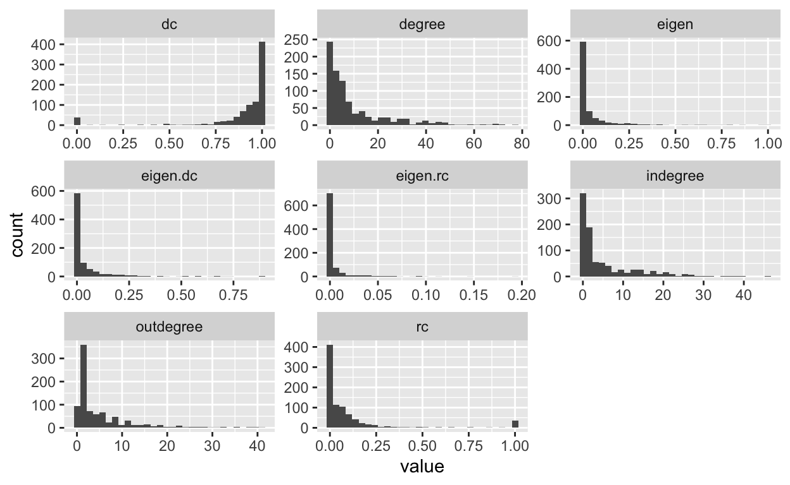
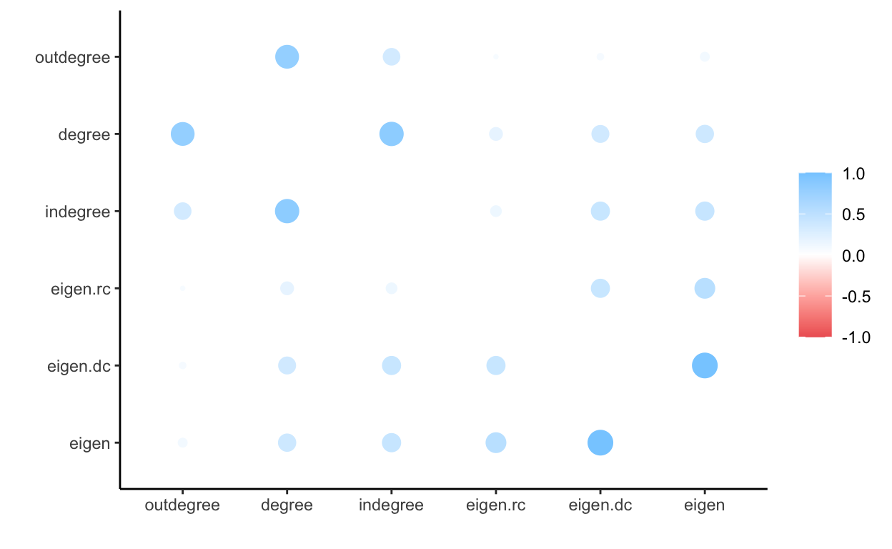
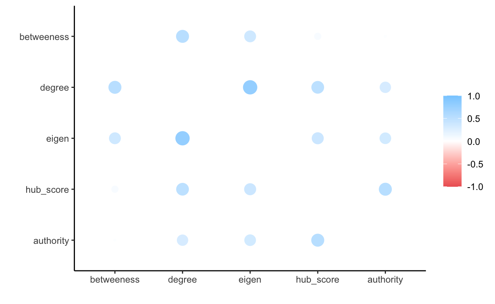

Who are the key actors in the football network? What makes them the key actors
Calculate closeness, betweenness and eigenvector centrality measures for your network data, and bonachic-power if possible. Compare these measures to basic degree centrality measures. Try to interpret the results. Are there any interesting patterns in the distribution of measures or correlations between them that provide insight into the measures?
You may also want to identify whether the same node(s) are more/less central using the different measures, and see if you can find any patterns in the results based on which nodes are high/low on each measures. Discuss (with any related evidence) whether or not the node(s) behavior is in line with or violates expectations based on the degree centrality measure, comparing across those measures using a data frame similar to that constructed in the syntax. Be sure to share your assignment with group members for comments.
The eigenvector centrality determines how important the neighborhood of the nodes is in the network. The higher the eigenvalue centrality, the more important the neighbors of that node are with respect to other nodes in the network. (Jackson 08) The eigenvalues also take into account the proximity of the node to many other important nodes in the network.
AS Roma has the highest eigenvalue in the network. This can be an additional support to our previous speculation on how AS Roma might influential in the influx and outflow of football talent as they are well connected to the other influential nodes in our football transfer network.
temp <- igraph::centr_eigen(ig,directed=T)
transfer.nodes$eigen <- temp$vector
#arrange descending and return top 5 nodes
arrange(transfer.nodes, desc(eigen)) %>%
slice(1:5)
name degree indegree outdegree eigen
AS Roma AS Roma 78 39 39 1.0000000
Genoa CFC Genoa CFC 73 46 27 0.9612356
Inter Milan Inter Milan 68 32 36 0.8787351
ACF Fiorentina ACF Fiorentina 66 38 28 0.7988873
US Sassuolo US Sassuolo 70 35 35 0.7789739We compute the derived and reflected Eigenvector centrality to better understand whether the influence is more observed in the neighborhood of the nodes or is it more observed on the strength of the node itself.
matrix <- as.matrix(as_adjacency_matrix(ig, attr = "weight"))
#square the adjacency matrix
matsq<-t(matrix) %*% matrix
#Calculate the proportion of reflected centrality.
transfer.nodes$rc<-diag(matsq)/rowSums(matsq)
#replace missing values with 0
transfer.nodes$rc<-ifelse(is.nan(transfer.nodes$rc),0,transfer.nodes$rc)
#Calculate received eigenvalue centrality
transfer.nodes$eigen.rc<-transfer.nodes$eigen*transfer.nodes$rc
#Calculate the proportion of derived centrality.
transfer.nodes$dc<-1-diag(matsq)/rowSums(matsq)
#replace missing values with 0
transfer.nodes$dc<-ifelse(is.nan(transfer.nodes$dc),1,transfer.nodes$dc)
#Calculate received eigenvalue centrality
transfer.nodes$eigen.dc<-transfer.nodes$eigen*transfer.nodes$dc
name degree indegree outdegree eigen
FC Barcelona FC Barcelona 59 21 38 0.2704215
Chelsea FC Chelsea FC 48 12 36 0.2449357
rc eigen.rc dc eigen.dc
FC Barcelona 0.2218696 0.05999830 0.7781304 0.2104232
Chelsea FC 0.2352494 0.05762098 0.7647506 0.1873148##cen <- eigen_centrality(ig, directed = TRUE)
#cen$vector
transfer.nodes%>%
select(-name) %>%
gather() %>%
ggplot(aes(value)) +
geom_histogram() +
facet_wrap(~key, scales = "free")

fashion(temp)
term outdegree degree indegree eigen.rc eigen.dc eigen
1 outdegree .94 .79 .67 .67 .69
2 degree .94 .95 .73 .79 .80
3 indegree .79 .95 .70 .82 .82
4 eigen.rc .67 .73 .70 .82 .86
5 eigen.dc .67 .79 .82 .82 1.00
6 eigen .69 .80 .82 .86 1.00 rplot(temp)

Betweeness centrality quantifies the number of times a node acts as a bridge along the shortest path between two other nodes.
transfer.nodes$betweeness <- igraph::betweenness(ig, directed=TRUE)
transfer.nodes%>%
arrange(desc(betweeness))%>%
slice(1:5)
name degree indegree outdegree
UC Sampdoria UC Sampdoria 57 32 25
Olympiacos Piraeus Olympiacos Piraeus 41 19 22
Genoa CFC Genoa CFC 73 46 27
ACF Fiorentina ACF Fiorentina 66 38 28
Hellas Verona Hellas Verona 39 27 12
eigen rc eigen.rc dc
UC Sampdoria 0.6156139 0.06250452 0.03847865 0.9374955
Olympiacos Piraeus 0.1548258 0.02184055 0.00338148 0.9781595
Genoa CFC 0.9612356 0.08798435 0.08457368 0.9120157
ACF Fiorentina 0.7988873 0.11743415 0.09381665 0.8825658
Hellas Verona 0.6603528 0.02847622 0.01880435 0.9715238
eigen.dc betweeness
UC Sampdoria 0.5771352 45262.42
Olympiacos Piraeus 0.1514443 43409.28
Genoa CFC 0.8766619 34603.48
ACF Fiorentina 0.7050706 31710.00
Hellas Verona 0.6415485 31489.50transfer.nodes$constraint<-constraint(ig)
Authorities are those actors which get many incoming links from hubs, presumably because of their high quality relevant information. (Klien 16) In this case Juventus, Chelsea, Barcelona,PSG, Manchester United and Athleteco have the highest authority scores. This means that these clubs are attracting talent from the hubs like Real Madrid, which we will see includes Eden Hazard’s transfer in 2019
transfer.nodes$authority <- authority_score(ig)$vector
a <- transfer.nodes %>%
arrange(desc(authority))
head(a)
name degree indegree outdegree
Juventus FC Juventus FC 68 27 41
Chelsea FC Chelsea FC 48 12 36
FC Barcelona FC Barcelona 59 21 38
Paris Saint-Germain Paris Saint-Germain 37 17 20
Manchester United Manchester United 29 15 14
Atlético de Madrid Atlético de Madrid 48 26 22
eigen rc eigen.rc dc
Juventus FC 0.6770212 0.2150981 0.14562594 0.7849019
Chelsea FC 0.2449357 0.2352494 0.05762098 0.7647506
FC Barcelona 0.2704215 0.2218696 0.05999830 0.7781304
Paris Saint-Germain 0.3905048 0.2504831 0.09781486 0.7495169
Manchester United 0.1991738 0.2315679 0.04612226 0.7684321
Atlético de Madrid 0.3488429 0.1835874 0.06404317 0.8164126
eigen.dc betweeness constraint authority
Juventus FC 0.5313953 20394.667 0.10137186 1.0000000
Chelsea FC 0.1873148 470.000 0.10431587 0.7752539
FC Barcelona 0.2104232 4600.083 0.09625534 0.7566895
Paris Saint-Germain 0.2926900 1106.000 0.11810230 0.6491154
Manchester United 0.1530515 1222.500 0.09350633 0.5523492
Atlético de Madrid 0.2847998 1422.662 0.09802569 0.5507481Many Ties to Peripheral Actors
name degree indegree outdegree
Aston Villa Aston Villa 35 27 8
Inter Milan Inter Milan 68 32 36
Borussia Dortmund Borussia Dortmund 45 18 27
ACF Fiorentina ACF Fiorentina 66 38 28
Real Madrid Real Madrid 46 17 29
RB Leipzig RB Leipzig 44 26 18
eigen rc eigen.rc dc eigen.dc
Aston Villa 0.2139009 0.1837553 0.03930541 0.8162447 0.1745954
Inter Milan 0.8787351 0.2193920 0.19278741 0.7806080 0.6859477
Borussia Dortmund 0.2370659 0.1480322 0.03509339 0.8519678 0.2019725
ACF Fiorentina 0.7988873 0.1174342 0.09381665 0.8825658 0.7050706
Real Madrid 0.2296944 0.2975292 0.06834078 0.7024708 0.1613536
RB Leipzig 0.3082591 0.1717242 0.05293556 0.8282758 0.2553235
betweeness constraint authority hub_score
Aston Villa 788.000 0.11333984 0.11093521 0.2347654
Inter Milan 2799.590 0.09623411 0.26367856 0.7339420
Borussia Dortmund 2073.000 0.06401961 0.14776045 0.5191494
ACF Fiorentina 31709.998 0.11085545 0.06147522 0.4296561
Real Madrid 4185.762 0.10787227 0.39259852 1.0000000
RB Leipzig 2936.417 0.09094430 0.10029228 0.3521672Consider Real Madrid a hub given that their hub_score is 1. We can confirm this by looking at higher eigenvector derived centrality and lower reflected centrality.
A few ties to central actors =
bridges(ig)
+ 238/4386 edges from 898a914 (vertex names):
[1] Maccabi Haifa ->Levski Sofia
[2] SC Farense ->Vancouver Whitecaps FC
[3] Moreirense FC ->Al-Batin FC
[4] Grenoble Foot 38 ->FC Famalicão
[5] CA Fénix ->FC Famalicão
[6] Maccabi Netanya ->Hapoel Beer Sheva
[7] Ironi Kiryat Shmona->Hapoel Beer Sheva
[8] Hapoel Haifa ->Hapoel Beer Sheva
[9] FC Basel 1893 U18 ->Juventus Primavera
[10] Amiens SC U19 ->Manchester United Youth
+ ... omitted several edges name degree indegree outdegree eigen rc
Maccabi Haifa Maccabi Haifa 1 0 1 0 0
eigen.rc dc eigen.dc betweeness constraint authority
Maccabi Haifa 0 1 0 0 1 0
hub_score
Maccabi Haifa 0We test the understanding whether these teams actually serve as bridges in the network. By looking at the derived and reflected centrality scores, we see that the the reflected centrality for Maccabi Haifa is low while the derived centrality is high, thereby making it a bridge.
head(transfer.nodes)
name degree indegree outdegree
Aston Villa Aston Villa 35 27 8
Inter Milan Inter Milan 68 32 36
Borussia Dortmund Borussia Dortmund 45 18 27
ACF Fiorentina ACF Fiorentina 66 38 28
Real Madrid Real Madrid 46 17 29
RB Leipzig RB Leipzig 44 26 18
eigen rc eigen.rc dc eigen.dc
Aston Villa 0.2139009 0.1837553 0.03930541 0.8162447 0.1745954
Inter Milan 0.8787351 0.2193920 0.19278741 0.7806080 0.6859477
Borussia Dortmund 0.2370659 0.1480322 0.03509339 0.8519678 0.2019725
ACF Fiorentina 0.7988873 0.1174342 0.09381665 0.8825658 0.7050706
Real Madrid 0.2296944 0.2975292 0.06834078 0.7024708 0.1613536
RB Leipzig 0.3082591 0.1717242 0.05293556 0.8282758 0.2553235
betweeness constraint authority hub_score
Aston Villa 788.000 0.11333984 0.11093521 0.2347654
Inter Milan 2799.590 0.09623411 0.26367856 0.7339420
Borussia Dortmund 2073.000 0.06401961 0.14776045 0.5191494
ACF Fiorentina 31709.998 0.11085545 0.06147522 0.4296561
Real Madrid 4185.762 0.10787227 0.39259852 1.0000000
RB Leipzig 2936.417 0.09094430 0.10029228 0.3521672cor<-transfer.nodes %>%
select(degree,eigen,betweeness, authority, hub_score)%>%
correlate() %>%
rearrange()
rplot(cor)

tempo <-as.data.frame(brokerage(network, cl = get.vertex.attribute(network,"league"))$raw.nli)
head(tempo)
w_I w_O b_IO b_OI b_O t
Aston Villa 209 0 0 0 0 209
Inter Milan 925 0 0 0 0 925
Borussia Dortmund 416 0 0 0 0 416
ACF Fiorentina 897 0 0 0 0 897
Real Madrid 420 0 0 0 0 420
RB Leipzig 410 0 0 0 0 410transfer.nodes<-transfer.nodes %>%
mutate(broker.tot = tempo$t, # AS ROMA, AS Monaco, US Sassuolo, Genoa CFC, Atlanta BC
broker.coord = tempo$w_I,
broker.itin = tempo$w_O, # Aston Villa, Inter Milan, Borussia Dortmund, ACF florentina
broker.rep = tempo$b_IO, # # Aston Villa, Inter Milan, Borussia Dortmund, ACF florentina
broker.gate = tempo$b_OI,
broker.lia = tempo$b_O)
broker <- transfer.nodes %>%
arrange(desc(broker.tot)) %>%
slice(1:10)
kable(broker)
| name | degree | indegree | outdegree | eigen | rc | eigen.rc | dc | eigen.dc | betweeness | constraint | authority | hub_score | broker.tot | broker.coord | broker.itin | broker.rep | broker.gate | broker.lia | |
|---|---|---|---|---|---|---|---|---|---|---|---|---|---|---|---|---|---|---|---|
| AS Roma | AS Roma | 78 | 39 | 39 | 1.0000000 | 0.1130986 | 0.1130986 | 0.8869014 | 0.8869014 | 20233.500 | 0.0830009 | 0.3603443 | 0.2527186 | 1286 | 1286 | 0 | 0 | 0 | 0 |
| AS Monaco | AS Monaco | 72 | 39 | 33 | 0.3837432 | 0.1410820 | 0.0541392 | 0.8589180 | 0.3296040 | 920.000 | 0.0822568 | 0.2386720 | 0.6582977 | 1157 | 1157 | 0 | 0 | 0 | 0 |
| US Sassuolo | US Sassuolo | 70 | 35 | 35 | 0.7789739 | 0.0487223 | 0.0379534 | 0.9512777 | 0.7410205 | 19581.790 | 0.1146313 | 0.1001784 | 0.1704004 | 1026 | 1026 | 0 | 0 | 0 | 0 |
| Genoa CFC | Genoa CFC | 73 | 46 | 27 | 0.9612356 | 0.0879843 | 0.0845737 | 0.9120157 | 0.8766619 | 34603.483 | 0.1803853 | 0.1525313 | 0.4153337 | 1015 | 1015 | 0 | 0 | 0 | 0 |
| Atalanta BC | Atalanta BC | 68 | 35 | 33 | 0.7380989 | 0.0801672 | 0.0591713 | 0.9198328 | 0.6789275 | 17953.233 | 0.0997573 | 0.1513361 | 0.3371393 | 966 | 966 | 0 | 0 | 0 | 0 |
| Inter Milan | Inter Milan | 68 | 32 | 36 | 0.8787351 | 0.2193920 | 0.1927874 | 0.7806080 | 0.6859477 | 2799.590 | 0.0962341 | 0.2636786 | 0.7339420 | 925 | 925 | 0 | 0 | 0 | 0 |
| SL Benfica | SL Benfica | 63 | 25 | 38 | 0.2308760 | 0.0952775 | 0.0219973 | 0.9047225 | 0.2088787 | 9303.833 | 0.0988418 | 0.1211357 | 0.5025727 | 905 | 905 | 0 | 0 | 0 | 0 |
| ACF Fiorentina | ACF Fiorentina | 66 | 38 | 28 | 0.7988873 | 0.1174342 | 0.0938166 | 0.8825658 | 0.7050706 | 31709.998 | 0.1108554 | 0.0614752 | 0.4296561 | 897 | 897 | 0 | 0 | 0 | 0 |
| Sporting CP | Sporting CP | 63 | 24 | 39 | 0.2121757 | 0.0853551 | 0.0181103 | 0.9146449 | 0.1940654 | 15777.081 | 0.0750053 | 0.0362787 | 0.2564397 | 891 | 891 | 0 | 0 | 0 | 0 |
| Juventus FC | Juventus FC | 68 | 27 | 41 | 0.6770212 | 0.2150981 | 0.1456259 | 0.7849019 | 0.5313953 | 20394.667 | 0.1013719 | 1.0000000 | 0.5912871 | 879 | 879 | 0 | 0 | 0 | 0 |
AS Roma plays a role of coordinator in the network which means that many ties go to and from AS Roma. This is in alignment with the degrees of the network as we saw earlier and the Eigenvector centrality which was also the highest for AS Roma in the network.
Aston Villa is an iterant broker in the network.